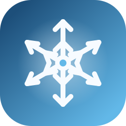

Snow Depth Data | Southern Andes
A scientific portal for exploring curated snow depth observations across the Southern Andes. Browse stations, compare watersheds, and inspect both monthly and annual metrics derived from quality-controlled daily records.

Scientific Data Explorer
Snow Depth Observatory
Regional comparison
Watershed comparison
Click a polygon on the map to compare monthly and annual snow depth across stations.
Select a basin, sub-basin, or nested sub-basin on the map to start the comparison.
Methodological note
Monthly median: a month is retained only if at least 70% of daily values are available.
Annual median (May-Oct): a year is retained only if every month from May to October satisfies the monthly coverage rule. The annual value is the median of all daily snow depth measurements within that May-October period.